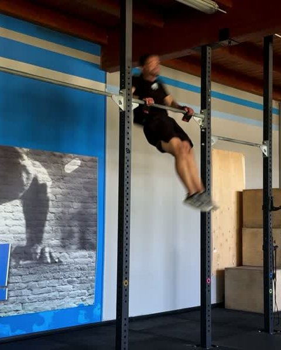
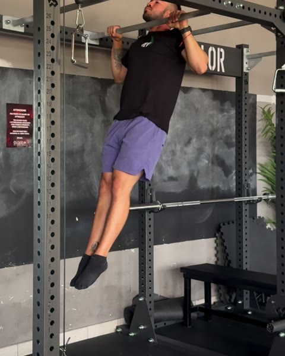
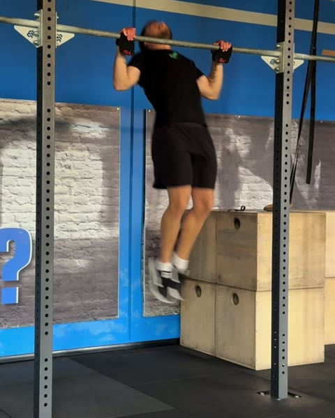

Gratis
Le guide di
Filipe Ramos
Un movimento alla volta: un test per capire da dove parti, e gli esercizi per salire.
Coach di ginnastica · @coachfiliperamos
00
01
02
03
 04
05
06
04
05
06


Strict Pull Up: da dove parti
Nove test per trovare il tuo gradino. Una settimana per ogni gradino.
Apri la guida
Toes to Bar: da dove parti
Sei test per trovare il tuo gradino. Quattro esercizi per salirlo.
Apri la guida
Kipping Pull Up: da dove parti
Nove test per trovare il tuo gradino. Tre esercizi per salirlo.
Apri la guida
Chest to Bar: da dove parti
Tre test per trovare il tuo gradino. Due sessioni da alternare per salirlo.
Apri la guidaBar Muscle Up: da dove parti
Otto test per trovare il tuo gradino. Due giorni da alternare per salirlo.
Apri la guida
Butterfly Pull Up: da dove parti
Nove test per trovare il tuo gradino. Due giorni da alternare per salirlo.
Apri la guida
Butterfly Chest to Bar: da dove parti
Tre test per trovare il tuo gradino. Due giorni da alternare per salirlo.
Apri la guida